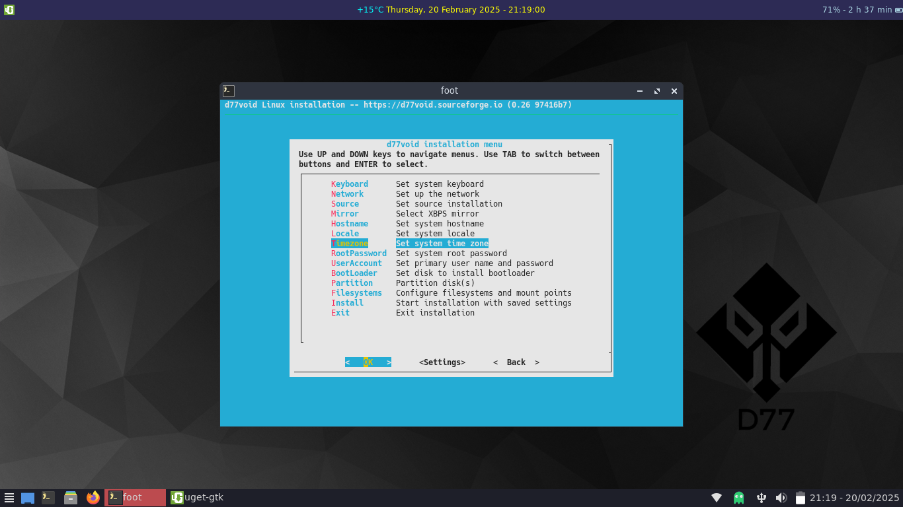
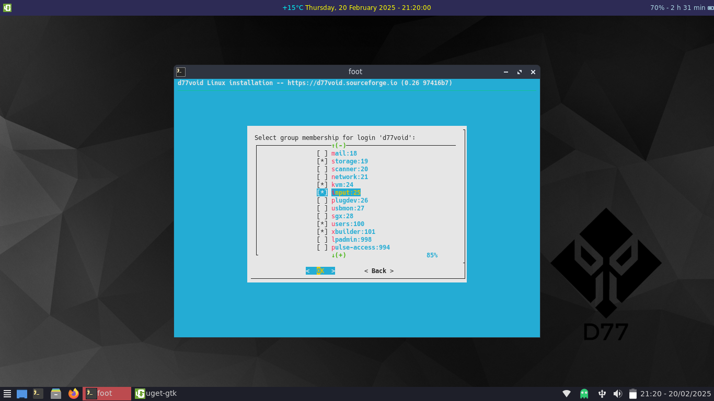
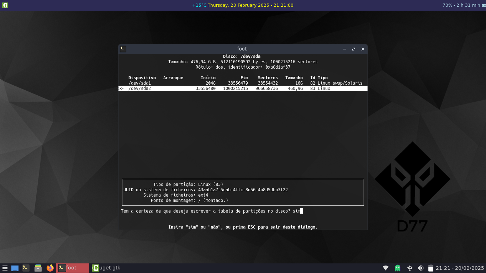
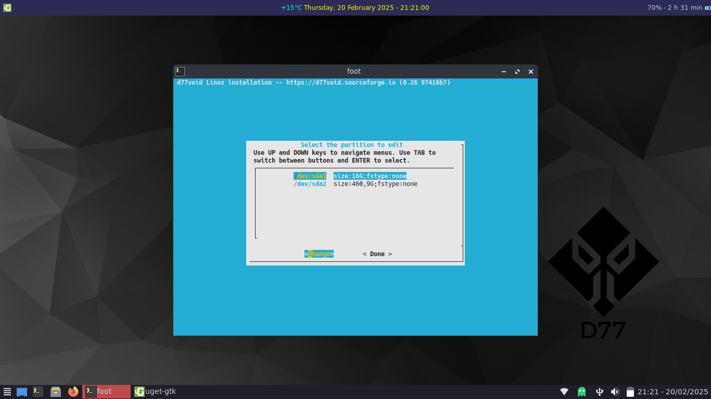
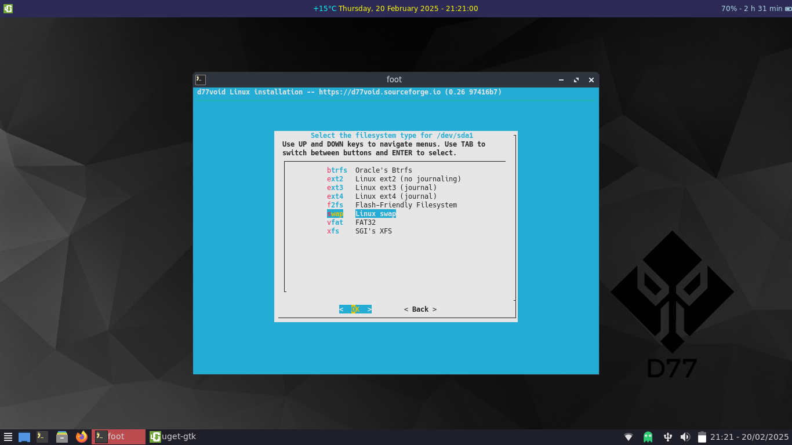
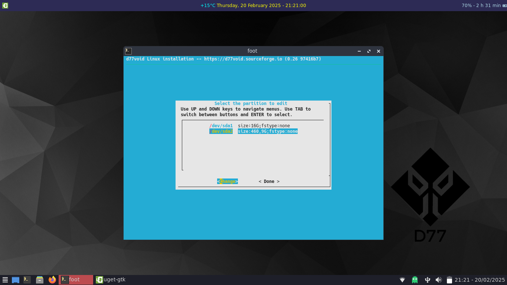

Enter the Void
This is a simple install guide for d77void;
After typing
sudo void-installer
you will be presented with this menu.

Hit return

Keyboard
Select your keyboard; in my case Portuguese.

Network, Source and Mirror
If you connected to your local network before, in network you will be presented with this slide:

just hit return and select your source choosing local to preserve live configs.
and then select a mirror (try to catch the less distant to you; in my case Germany - Frankfurt)
Hostname
Select a Hostname you like.
Locale
Choose your preferred locale; that will spawn the system language.

Timezone
Select your time zone

In my case, Europe / Lisbon


Root and User
Now set a password for root and then create a regular user;
set a password.
and add the user to these 2 extra groups.


Bootloader
Hit bootloader to choose disk to install GRUB


and choose graphical terminal
Partition
Choose a disk to partition
In this case I will show you how to partition in a pc with Legacy bios. In case of EFI you should create a 300mb vfat partition.
I chose cfdisk to partition my disk this way (16Gb Swap and the remaining to / ).
Don't forget to make / partition bootable.

Save the work done

Filesystem
Hit filesystem to be presented with something like this

format partitions



And finally hit Install
Congratulations; you have successfully installed d77void!